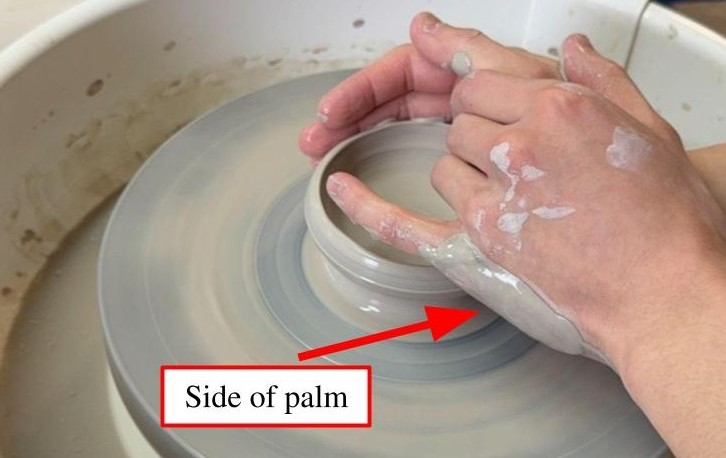
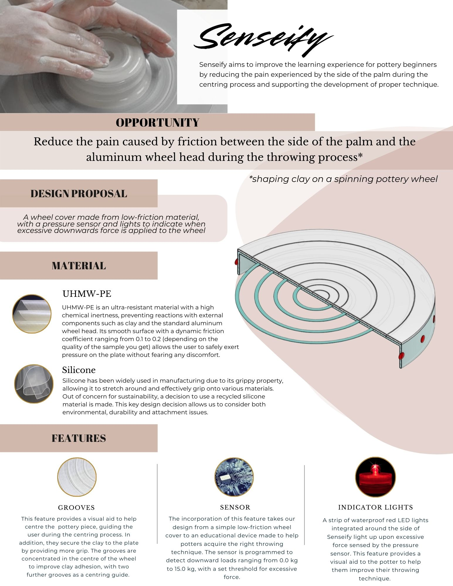
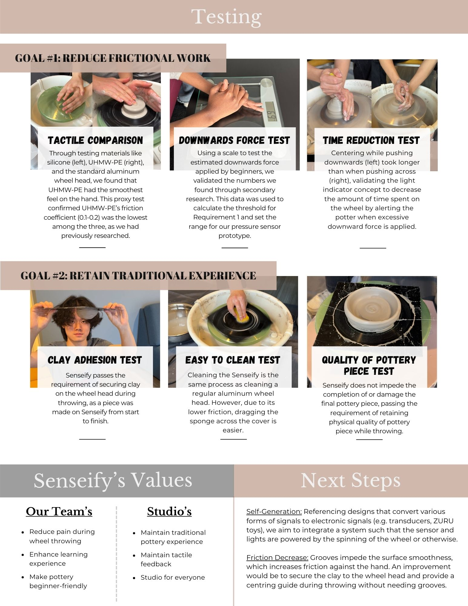

ESC 102 Praxis II Throwing MUD Without Pain
Who: Team of 4
What: Develop a solution for an opportunity found within a local community
When: Jan 2025 to April 2025
Where: University of Toronto
Why: ESC 102
In the second semester of first-year Engineering Science, I worked in a team of four for an Engineering Design course, ESC 102 Praxis II. The main project was to find a community in the GTA and work with them to improve an aspect of their lived experience. My team—Jovan Chen, Sanibi Amira Soura, David Yang, and I—developed Senseify to address an opportunity we observed while participating in a trial at MUD The Clay Studio: pain caused by friction between the side of the palm and the spinning aluminum wheel. At the end of the term, we presented our design at a public showcase.
 